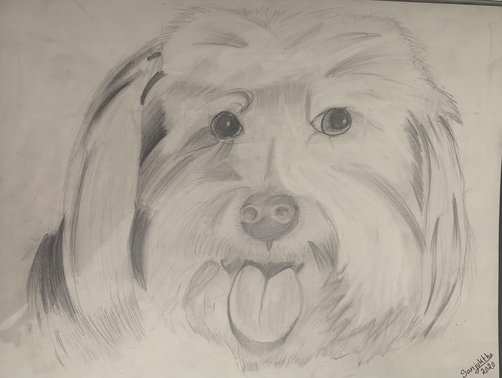
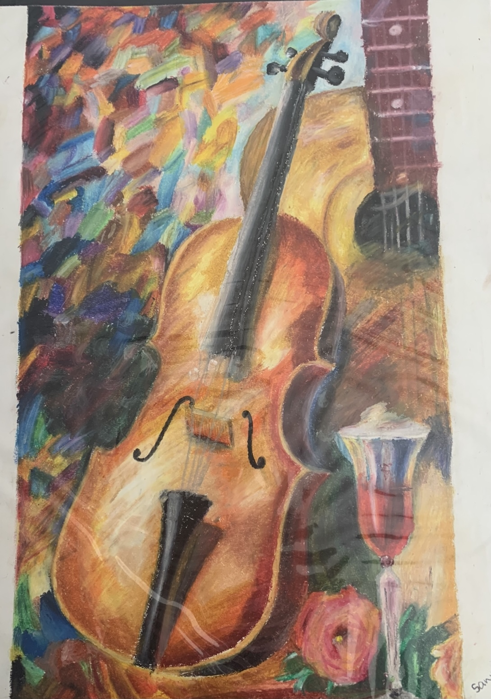

1. Test Image -

Output on Wolfram Project - A drawing of a dog
Output on MobileNet Model - Maltese dog
Result
MobileNet Model is more Accurate
2. Test Image -

Output on Wolfram Project - A close up of a water bottle
Output on MobileNet Model - microphone
Result
Wolfram Project is more Accurate
3. Test Image -

Output on Wolfram Project - A bowl of fruit
Output on MobileNet Model - Windsor tie
Result
Wolfram Project is more Accurate
4. Test Image -
Output on Wolfram Project - A drawing of a person
Output on MobileNet Model - comic book
Result
Wolfram Project is more Accurate
5. Test Image -

Output on Wolfram Project - A guitar
Output on MobileNet Model - violin
Result
MobileNet Model is more Accurate